En esta lección se explica cómo configurar Eclipse PDT para crear y ejecutar archivos PHP o HTML y organizarlos en carpetas:
Elección del modo de trabajo
En Eclipse PDT los archivos PHP se agrupan en proyectos (en inglés, projects) que a su vez se agrupan en espacios de trabajo (en inglés, workspaces). Aunque se pueden tener definidos varios espacios de trabajo, sólo se puede tener abierto un espacio de trabajo. Para cambiar de espacio de trabajo, hay que cerrar y abrir de nuevo Eclipse.
Físicamente, cada espacio de trabajo se guarda en el disco duro del ordenador en una carpeta distinta. En la carpeta del espacio de trabajo, Eclipse PDT guarda los archivos de configuración de Eclipse y la información sobre los proyectos y las carpetas y archivos incluidos en cada proyecto.
Lo archivos PHP se podrían guardar también en el espacio de trabajo, pero yo recomiendo guardarlos por separado, para facilitar la portabilidad.
En esta lección se explica los pasos a realizar de manera que:
Eclipse PDT esté en la carpeta "C:\software\eclipse-pdt-neon" (como se explica en la lección Instalación de Eclipse PDT)
el espacio de trabajo esté en la carpeta "C:\software\workspace-nombre-de-usuario-php"
los archivos PHP estén en la carpeta "Mis documentos\...".
desde Eclipse se puedan abrir y ejecutar los archivos en el navegador mediante la URL "http://localhost/...".
Para esto último habrá que crear un alias en Apache (no se recomienda modificar la directiva DocumentRoot de Apache).
En el apartado Configurar Eclipse PDT y Apache en clase se indica cómo tendrá que hacerse en clase la configuración de Eclipse PDT y Apache para que varios alumnos puedan utilizar el mismo ordenador sin molestarse unos a otros.
Espacio de trabajo (Workspace)
Al iniciar Eclipse PDT mientras se carga el programa se muestra una imagen que indica la versión de Eclipse, en este caso Eclipse PDT Neon.1 (publicada en septiembre de 2016).
Cada vez que se inicia Eclipse PDT, el programa pregunta el espacio de trabajo a utilizar y muestra el último espacio de trabajo utilizado (aunque se pueden elegir otros). Si se marca la casilla de verificación "Use this as the default ...", Eclipse deja de hacer esta pregunta y utiliza siempre el mismo espacio de trabajo, lo que no es aconsejable.
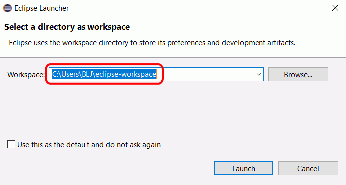
En Windows el espacio de trabajo predeterminado se encuentra en la carpeta de usuario. En este curso se recomienda crear el workspace en la carpeta C:\software\workspace-nombre-de-usuario-php, (fuera de la carpeta eclipse). Para elegir la ubicación del espacio de trabajo se puede escribir directamente en la caja de texto o hacer clic en el botón "Browse...". Una vez elegida la ubicación deseada, hay que hacer clic en el botón OK.
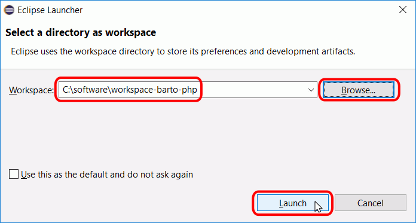
Una vez iniciado Eclipse PDT, se puede cambiar de espacio de trabajo mediante el menú "File > Switch Workspace".
La primera vez que se inicie Eclipse PDT, el cortafuegos de Windows pide al usuario confirmación. Para poder utilizarlo hace falta al menos autorizar el acceso en redes privadas:
Para eliminar un espacio de trabajo, simplemente hay que borrar la carpeta que lo contiene. Una vez borrado un espacio de trabajo, Eclipse PDT sigue mostrando la carpeta en la lista desplegable aunque el espacio de trabajo ya no exista. Si se vuelve a elegir un espacio de trabajo ya borrado, Eclipse PDT lo volverá a crear.
Banco de trabajo (Workbench) y perspectivas (Perspectives)
Al abrir Eclipse PDT por primera vez, se muestra una pantalla de Bienvenida con enlaces a tareas de configuración, ayuda sobre Eclipse PDT, etc.
Para que no se muestre la pantalla de Bienvenida al abrir Eclipse PDT, se puede desmarcar la casilla situada en la parte inferior derecha de la ventana.
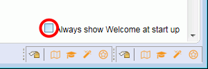
Cerrando la pestaña "Welcome" o haciendo clic en el icono Workbench, se mostrará la perspectiva PHP. En Eclipse, una perspectiva es un conjunto de vistas (subventanas) y menús. Las diferentes versiones de Eclipse (Java, PHP, CVS, etc) muestran distintas perspectivas predefinidas. Eclipse PDT muestra una perspectiva con vistas específicas para el desarrollo de PHP.
Si por cualquier motivo no se abriera la perspectiva PHP, se puede abrir haciendo clic en el menú Window > Perspective > Open Perspective > PHP o mediante el icono situado en el extremo derecho de la barra de herramientas.
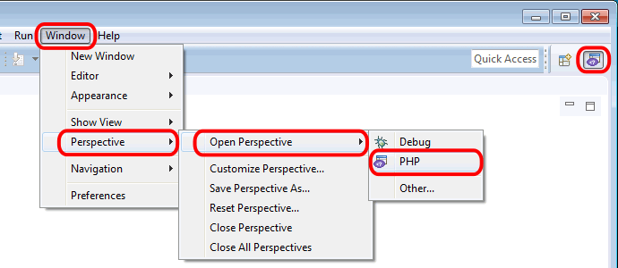
Crear proyectos (Project)
Una vez abierta la perspectiva PHP, debe crearse un proyecto en la vista Explorador PHP (PHP Explorer), haciendo clic derecho en la zona en blanco y eligiendo la opción New > Project....
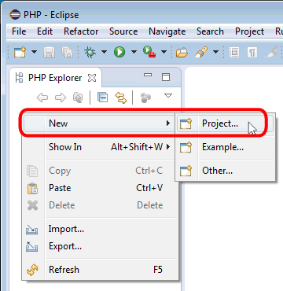
Se abrirá una ventan ofreciendo varios asistentes para diferentes tipos de proyectos. Hacer clic en "Local PHP Project" y a continuación hacer clic en el botón "Next".
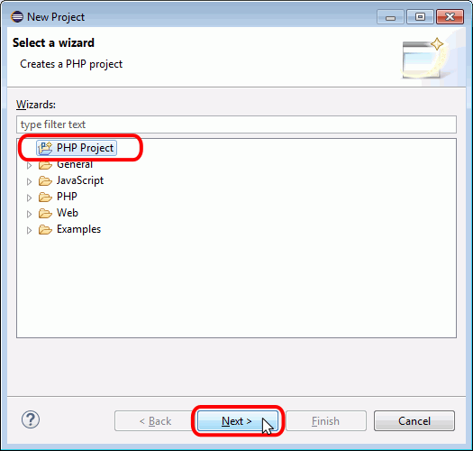
Se abrirá una ventana de creación del proyecto en el que basta con escribir el nombre (este nombre no debe contener espacios ni acentos, ya que Eclipse PDT lo utiliza para construir las URL) y hacer clic en Finish. Los proyectos se guardan de forma predeterminada en el espacio de trabajo. En el ejemplo, se ha escrito el nombre "miproyecto". La ventana de creación de proyectos tiene dos pantallas más con opciones de configuración que no se tratan aquí.
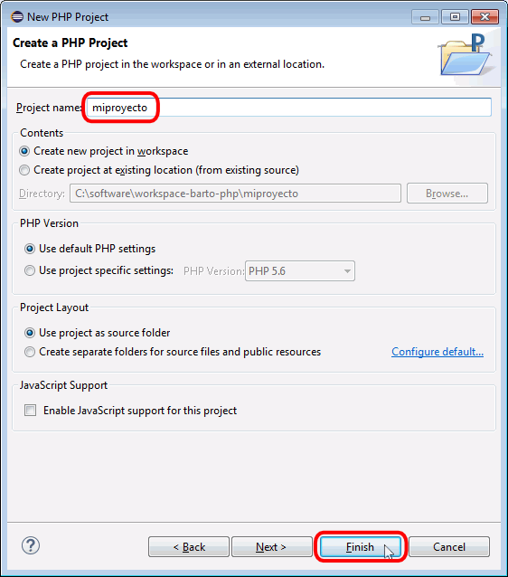
Una vez creado el proyecto, este aparece en la vista Explorador PHP.
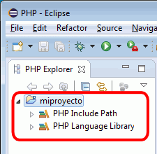
En el Explorador de Windows se puede comprobar que en el espacio de trabajo se ha creado la carpeta "miproyecto":
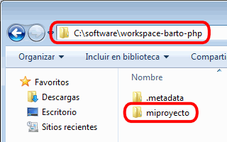
Crear carpetas enlazadas (Linked folder)
Una vez creado el proyecto, debe crearse una carpeta enlazada (para que los archivos no tengan que estar en el espacio de trabajo, sino en cualquier otro sitio del disco duro). Una carpeta enlazada se crea en la vista Explorador PHP (PHP Explorer), haciendo clic derecho sobre el proyecto y eligiendo la opción New > Folder.
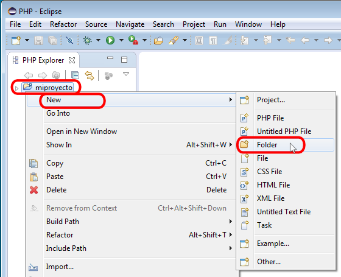
Se abrirá una ventana de creación de la carpeta en el que se debe escribir el nombre de la carpeta (Folder name). Este nombre no debe contener espacios ni acentos, ya que Eclipse PDT lo utiliza para construir las URL. En el ejemplo, se ha escrito el nombre "micarpeta". En esta ventana hay que hacer clic en Advanced para mostrar más opciones.
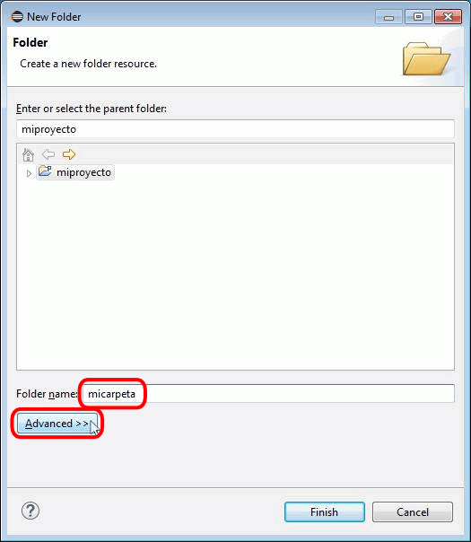
A continuación, se debe marcar la casilla "Link to alternate location (Linked Folder)" y hacer clic en el botón "Browse..." para elegir la carpeta donde se van a guardar los archivos PHP.
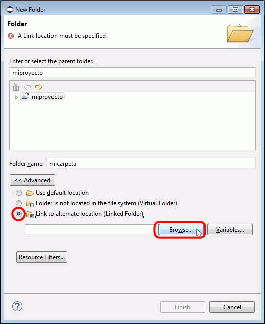
Una vez creada y elegida la carpeta (en el ejemplo se ha elegido la carpeta "Mis documentos\IAW Barto\PHP"), hay que hacer clic en el botón "Finish" para terminar.
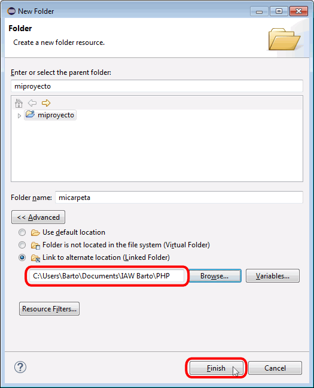
Una vez creada la carpeta, esta aparece en la vista Explorador PHP (el icono de las carpetas enlazadas incluyen una flecha en la esquina inferior derecha del icono, lo que permite identificarlas fácilmente).
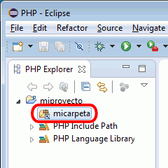
Crear carpetas no enlazadas (Folder)
Una vez creada la carpeta enlazada, en ella se pueden crear todos los archivos y subcarpetas que se deseen. Estas carpetas ya no necesitan ser carpetas enlazadas.
Para crear una subcarpeta en la carpeta enlazada, en la vista Explorador PHP (PHP Explorer) hay que hacer clic derecho sobre la carpeta superior (en el ejemplo, la carpeta enlazada) y elegir la opción New > Folder.
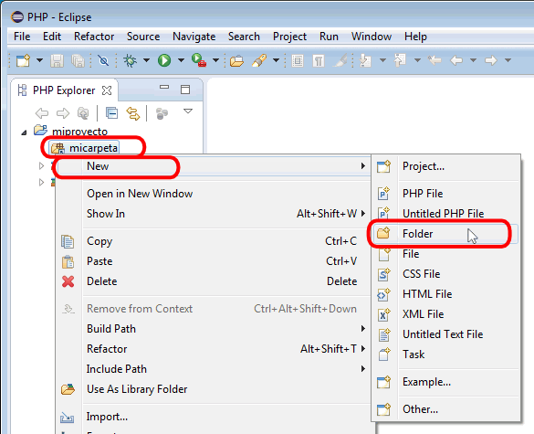
Se abrirá una ventana de creación de la carpeta en el que se debe escribir el nombre de la carpeta (Folder name) y hacer clic en Finish. Este nombre no debe contener espacios ni acentos, ya que Eclipse PDT lo utiliza para construir las URL. En el ejemplo, se ha escrito el nombre "pruebas".
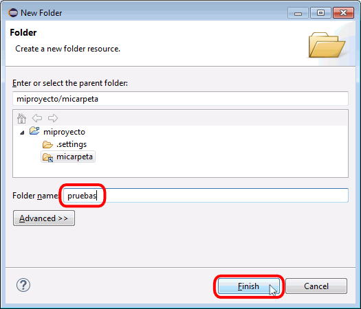
Una vez creada la carpeta, esta aparece en la vista Explorador PHP (el icono de una carpeta no enlazada es distinto del de la carpeta enlazada).
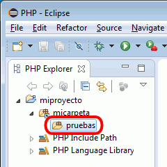
En el Explorador de Windows se puede comprobar que en la carpeta a la que apunta la carpeta superior (en el ejemplo, la carpeta enlazada micarpeta) se ha creado la carpeta "pruebas":
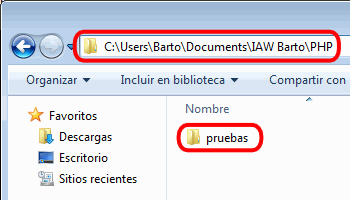
Crear archivos PHP (PHP File)
Para crear un archivo PHP, en la vista Explorador PHP (PHP Explorer) hay que hacer clic derecho en la carpeta en la que se quiera crear el archivo y elegir la opción New > PHP File.
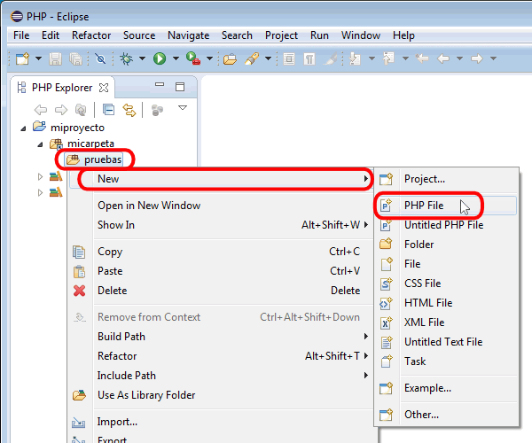
Se abrirá una ventana de creación de archivo en el que se debe escribir el nombre (este nombre no debe contener espacios ni acentos, ya que Eclipse PDT lo utiliza para construir las URL) y hacer clic en Finish. En el ejemplo, se ha escrito el nombre "prueba_01.php".
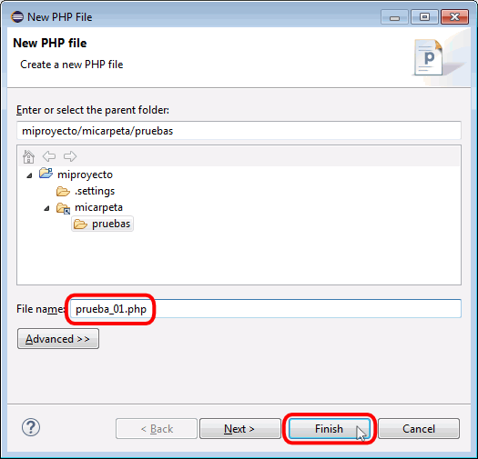
Una vez creado el archivo, este aparece en la vista Explorador PHP y al hacer doble clic sobre un archivo, su contenido aparece en la vista Editor PHP.
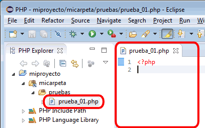
En Windows, con el explorador puede comprobarse que se ha creado el archivo:
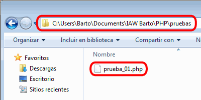
Ejecutar archivos PHP
Nota: Para abrir desde Eclipse los archivos PHP en el navegador predeterminado del sistema desde Eclipse, hay que configurar Eclipse como se explica en la lección Configuración de Eclipse (2).
Antes de ejecutar un archivo PHP, hay que guardar el archivo. Una asterisco en la pestaña del archivo indica si el archivo se ha modificado desde que se guardó por última vez. Para guardar el archivo, se puede hacer clic en el botón Guardar de la barra de herramientas.
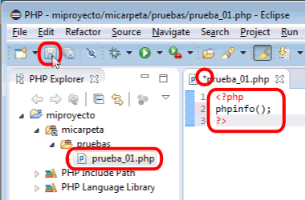
Una vez guardado, para ejecutar un archivo PHP, hay que hacer clic en el botón de ejecución:
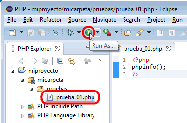
La primera vez que se ejecute un archivo, se mostrará una ventana preguntando si el archivo se quiere ejecutar en la línea de comandos o abrir en el navegador. En este curso se abrirán siempre los archivos en el navegador, por lo que elegiremos siempre la opción "PHP Web Application"
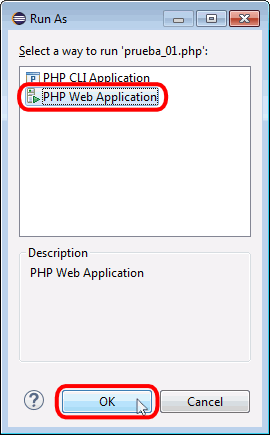
También se puede ejecutar un archivo haciendo clic derecho en el archivo en la vista Explorador PHP (PHP Explorer), y eligiendo la opción Run As > PHP Web Application.
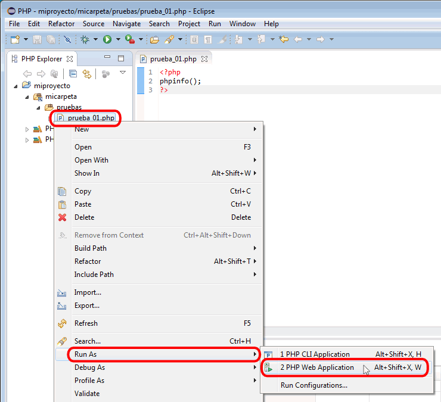
La primera vez que se ejecuta un archivo PHP, el cortafuegos de Windows puede mostrar un aviso. Es necesario hacer clic en "Desbloquear" para poder ejecutar archivos desde Eclipse PDT.
La primera vez que se ejecuta un archivo PHP, Eclipse PDT muestra la URL con la que se ejecutará el archivo. Esta URL se puede modificar, aunque si las carpetas se han creado correctamente y el servidor está configurado correctamente, no es necesario hacerlo.
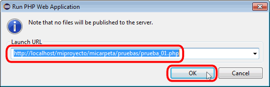
Al hacer clic en OK se abrirá una vista de navegador con el archivo seleccionado (en el caso de utilizar el navegador interno) o el navegador del sistema con el archivo seleccionado (en caso de utilizar el navegador del sistema). Si Apache está configurado correctamente, la página se mostrará en el navegador, si no, se mostrará un aviso de archivo no encontrado (error 404).
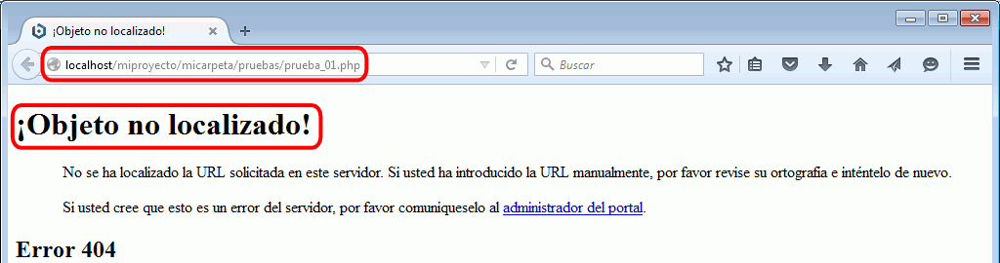
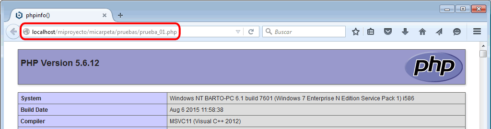
Configurar Apache
Al ejecutar un archivo PHP desde Eclipse PDT, Eclipse PDT envía al navegador una dirección construida a partir de los elementos (proyecto, carpetas, etc.) definidos en Eclipse PDT. Ese archivo se encuentra realmente en una carpeta del disco duro. Para que Apache pueda servir la página web al navegador, hay que relacionar la dirección (URL) con la ruta en el disco duro, lo que se consigue añadiendo un alias en el archivo de configuración de Apache httpd.conf.
Para saber qué alias hay que añadir, hay que comparar la dirección que genera Eclipse PDT (a partir del nombre del proyecto, del nombre de la carpeta enlazada y del nombre de carpetas y archivo) con la ruta en el disco del archivo, como ilustra la imagen siguiente:
En el ejemplo definido en esta lección y que se muestra en las capturas, el nombre del proyecto es "miproyecto", el nombre de la carpeta enlazada es "micarpeta", se ha creado una carpeta "pruebas" y el fichero se llama "prueba_01.php". La dirección que genera Eclipse PDT es entonces: "http://localhost/miproyecto/micarpeta/pruebas/prueba_01.php", como muestra la tabla siguiente:
A partir de esta dirección, Apache tiene que poder encontrar el documento en el disco. En el ejemplo definido en esta lección y que se muestra en las capturas, la ruta real del archivo es:
en Windows 7: "C:\Users\NombreDeUsuario\Mis documentos\IAW Barto\ PHP\pruebas\prueba_01.php".
La dirección generada por Eclipse y la ruta real del archivo deben comparase de derecha a izquierda. La parte final común y el inicio de la dirección (http://localhost/) se pueden descartar. El resto es lo que se utiliza para crear el alias. En el ejemplo definido en esta lección y que se muestra en las capturas el alias enlazaría "miproyecto/micarpeta/" con "C:\Users\Barto\Mis documentos\IAW Barto\PHP", como muestra la tabla siguiente:
Así, en el ejemplo definido en esta lección y que se muestra en las capturas las líneas a añadir en el archivo httpd.conf serían las siguientes (resaltadas en negrita):
<IfModule alias_module>
# ...
Alias /miproyecto/micarpeta "C:\Users\Barto\Documents\IAW Barto\PHP"
<Directory "C:\Users\Barto\Documents\IAW Barto\PHP">
Options Indexes FollowSymLinks Includes ExecCGI
AllowOverride All
Require all granted
</Directory> # ...
</IfModule>
En cualquier directiva es necesario escribir entre comillas las rutas que contengan espacios en blanco.
En resumen, si en el workspace se crea un proyecto y una carpeta enlazada que enlaza a un directorio en el disco, el alias a crear será:
# ...
Alias /nombre-proyecto/nombre-carpeta "ruta-del-directorio-en-el-disco"
<Directory "ruta-directorio-en-el-disco">
Options Indexes FollowSymLinks Includes ExecCGI
AllowOverride All
Require all granted
</Directory>
# ...
Si en el workspace hay varias carpetas enlazadas, habrá que crear tantos alias como carpetas enlazadas (tanto si están en el mismo proyecto como si están en proyectos diferentes).
Configurar Eclipse PDT y Apache en clase
Los nombres del proyecto, de la carpeta enlazada y de la ubicación de los archivos PHP recomendados para utilizar en clase se proponen en el ejercicio Apache y Eclipse 6.
Crear archivos HTML
Para crear un archivo HTML, hay que seleccionar la carpeta en la que se quiera crear el archivo en la vista Explorador PHP (PHP Explorer), hacer clic derecho y elegir la opción New > HTML.
Se abrirá una ventana de creación de archivo en el que se debe escribir el nombre (este nombre no debe contener espacios ni acentos, ya que Eclipse PDT lo utiliza para construir las URL) y hacer clic en Next. En el ejemplo, se ha escrito el nombre "prueba_01.html".
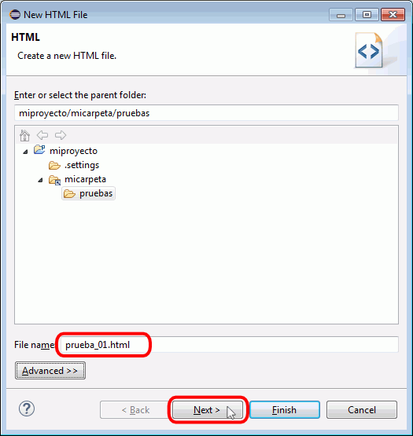
En la segunda pantalla se debe elegir el tipo de documento HTML y hacer clic en Finish. En el ejemplo se ha elegido la plantilla HTML 5.
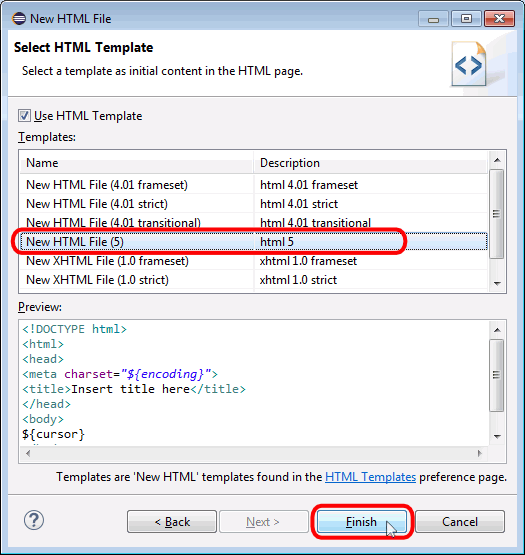
Una vez creado el archivo, este aparece en la vista Explorador PHP y su contenido aparece en la vista Editor HTML.
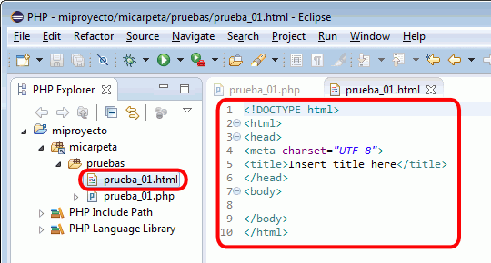
En Mi PC puede comprobarse que se ha creado el archivo.
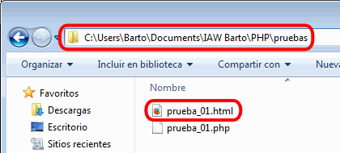
Ejecutar archivos HTML
Eclipse PDT no es capaz de ejecutar directamente en el servidor archivos HTML, pero se puede conseguir creando primero una herramienta externa (External Tool).
Crear la herramienta externa
Para crear la herramienta externa, hay que elegir el menú Run > External Tools > External Tools Configurations ....
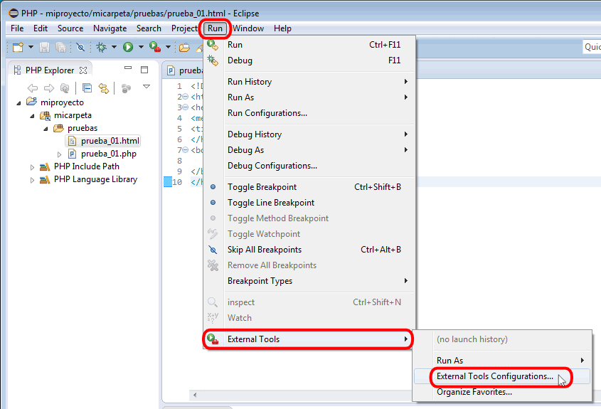
Se abrirá la ventana de administración de las configuraciones de herramientas externas. En ella hay que hacer clic en "Program".
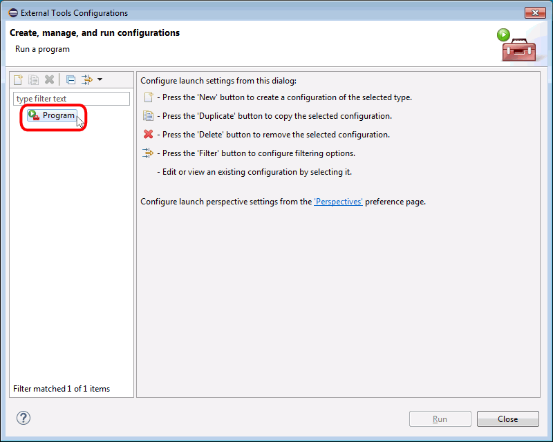
A continuación hay que hacer clic en el icono de "New launch configuration".
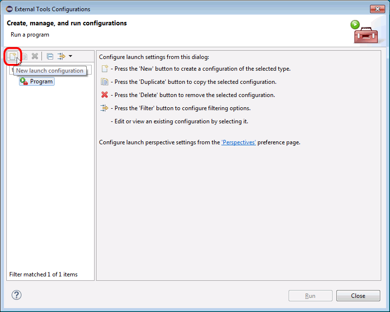
Se mostrará la nueva herramienta externa, con sus opciones de configuración en blanco:
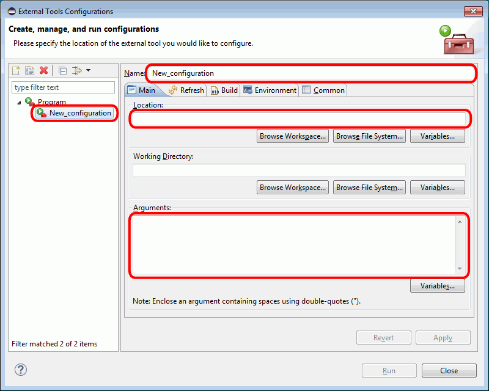
Hay que escribir el nombre de herramienta (en el ejemplo, "HTML en Firefox"), la ruta de la herramienta (en el ejemplo se ha seleccionado el ejecutable firefox.exe del navegador Firefox haciendo clic en "Browse File System...") y los argumentos (en el ejemplo, "localhost${container_path}/${resource_name}"). Para finalizar hay que hacer clic en el botón Apply.
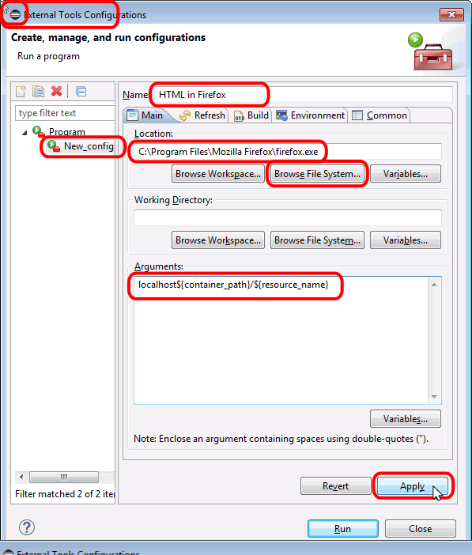
Se mostrará la nueva configuración de herramienta externa recién creada, con su nombre. Finalmente, hay que hacer clic en Run para ejecutar en el servidor el archivo HTML elegido al principio y que Eclipse recuerde que se ha utilizado la herramienta externa.
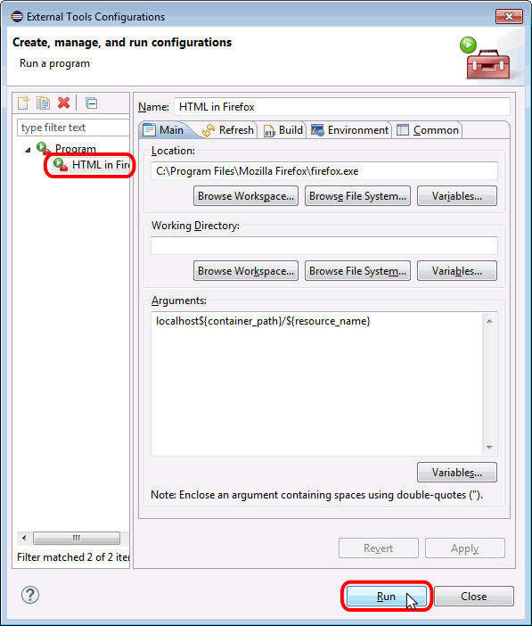
Al hacer clic en Run, se abrirá Firefox mostrando el archivo en el servidor local:
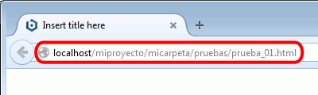
Igualmente, se pueden crear otras herramientas externas para ejecutar los archivos en otros navegadores (Internet Explorer, Chrome, etc.)
Utilizar la herramienta externa
Una vez creada la herramienta externa, se puede ejecutar un archivo HTML seleccionándolo en la vista PHP Explorer, abriendo el menú Run > External Tools y eligiendo la herramienta externa creada anteriormente (en el ejemplo, la herramienta se llama "HTML en Firefox"):
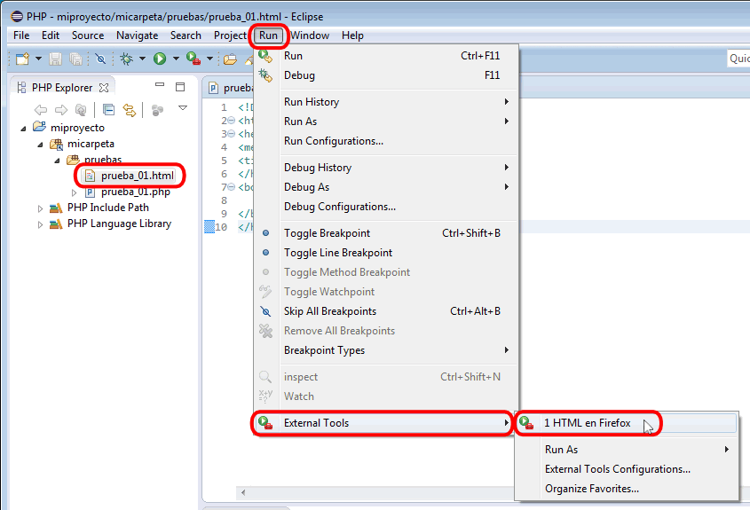
Al elegirla, se abrirá Firefox mostrando el archivo en el servidor local:
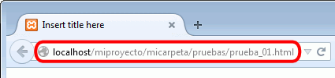
El botón de herramientas externas se puede utilizar para ejecutar tanto archivos HTML como archivos PHP, seleccionándolos en la vista PHP Explorer o seleccionando su pestaña.
El botón de herramientas externas se aplica la última herramienta aplicada, pero haciendo clic en el desplegable se podrían ver todas las herramientas externas y elegir una específica:


{kind=link}
{kind=link}
{kind=link}